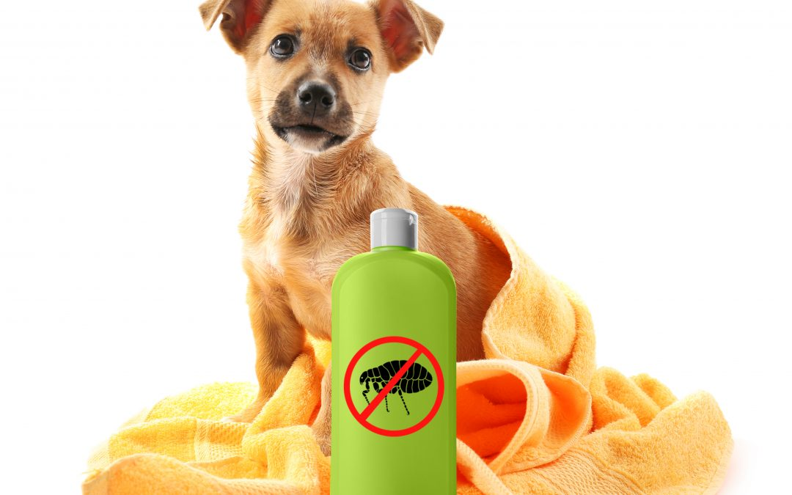

Ingreso al sistema

Cuando hablamos de desparasitación externa nos referimos al hecho de eliminar los parásitos externos que afectan a la piel y al pelo de los animales. Estos parásitos son capaces también de transmitir enfermedades que pueden llegar a ser muy graves.
En el momento en que tu cachorro salga a la calle y empiece a dar sus primeros paseos, se expondrá fácilmente al contagio de estos parásitos. Entre los más comunes, figuran las pulgas y las garrapatas, Éstas se instalan en el pelaje del animal, ocasionándoles picor, heridas e incomodidad. En ocasiones, también pueden aparecer otro tipo de problemas por otro tipo de parásitos externos como los piojos o los mosquitos.
Para acabar y prevenir la aparición de estos parásitos externos, la desparasitación se realiza en el exterior del cuerpo. Para ello, se pueden utilizar collares, sprays o pipetas. Estas últimas, tienen un líquido que actúa contra estos parásitos. El líquido de estas pipetas de desparasitación se debe echar en la zona trasera del cuello del perro. Así evitaremos que el perro pueda lamerse o tacar ese líquido.
Cuando la utilices, es recomendable no haber bañado ni bañar a tu cachorro los 3 días antes, ni los 3 siguientes a la aplicación. Con la ayuda de un guante, frótalo homogéneamente a contrapelo sobre la piel de tu cachorro, apartando su pelo con la mano. Evita aplicarla sobre aquellas zonas más susceptibles de irritación (ojos, boca y oído).